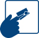
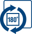

Ampio ambito d'utilizzo
Adulto e pediatrico (dai 3 anni)
Uso facile
Tecnologia user friendly Misurazione della saturazione
dell'ossigeno
con un solo tasto
Veloce
Rilevazione dei valori in circa 5 secondi
Frequenza cardiaca
Tecnologia user friendly Misurazione della saturazione
dell'ossigeno
con un solo tasto

Large & Reverse display
Grande display con possibilità di ruotare i dati visualizzati a
favore
del paziente
Design smart
Piccolo e leggero, puoi portarlo sempre con te ovunque tu
sia